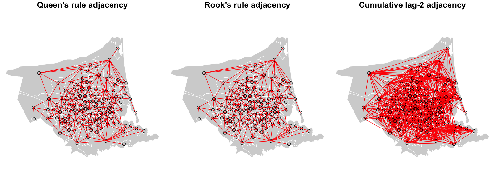

Code
library(sf)
library(dplyr)
library(spdep)
library(sp)This figure is intended to demonstrate the diversity of possible conceptualisations of ‘neighbour’ that are often deployed in spatial analysis contexts, and represent possible different approaches to relative space.
The spdep package I am using here is not the easiest to use. The best guidance on spdep I’ve found is in
Bivand R, EJ Pebesma, and V Gómez-Rubio. 2013. Applied Spatial Data Analysis with R. 2nd edn. Springer.
The newer sfdep package is still finding its feet at time of writing (Oct 2023), but will likely be a better choice before long.
library(sf)
library(dplyr)
library(spdep)
library(sp)First read a polygons dataset. You’ll need to supply your own for this.
chch <- st_read("chch-sa2.gpkg") # you need a spatial datasetspdep requires the data to be in the sp package format, so we convert to that.
polys <- chch %>%
select(geom) %>%
as("Spatial")Now make some points inside the polygons, and also some centroids.
# guaranteed inside the polygons
pts <- chch %>%
st_point_on_surface() %>%
st_geometry()
# not guaranteed, but better(?) for distance measurements
pts_c <- chch %>%
st_centroid() %>%
st_geometry()These are presented in a single figure in the book in four rows of three. Here I show them as sets of three for greater clarity.
layout(matrix(1:3, ncol = 3, byrow = TRUE))
par(mai = c(0, 0, 0.15, 0))
nb <- polys %>% poly2nb(queen = TRUE)
plot(polys, col = "lightgrey", lwd = 0.5, border = 'white',
main = "Queen's rule adjacency")
plot(nb, pts, col = 'red', lwd = 0.5, add = TRUE)
nb <- polys %>% poly2nb(queen = FALSE)
plot(polys, col = "lightgrey", lwd = 0.5, border = 'white',
main = "Rook's rule adjacency")
plot(nb, pts, col = 'red', lwd = 0.5, add = TRUE)
nb <- nb %>% nblag(2) %>% nblag_cumul()
plot(polys, col = "lightgrey", lwd = 0.5, border = 'white',
main = "Cumulative lag-2 adjacency")
plot(nb, pts, col = 'red', lwd = 0.5, add = TRUE)
Note that we use the centroids (pts_c) to calculate the distances, but the points inside the polygons (pts) from st_point_on_surface() for the plotting.
layout(matrix(1:3, ncol = 3, byrow = TRUE))
par(mai = c(0, 0, 0.15, 0))
nb <- pts_c %>% knearneigh(k = 3) %>% knn2nb()
plot(polys, col = "lightgrey", lwd = 0.5, border = 'white',
main = "k = 3")
plot(nb, pts, col = 'red', lwd = 0.5, add = TRUE)
nb <- pts_c %>% knearneigh(k = 6) %>% knn2nb()
plot(polys, col = "lightgrey", lwd = 0.5, border = 'white',
main = "k = 6")
plot(nb, pts, col = 'red', lwd = 0.5, add = TRUE)
nb <- pts_c %>% knearneigh(k = 12) %>% knn2nb()
plot(polys, col = "lightgrey", lwd = 0.5, border = 'white',
main = "k = 12")
plot(nb, pts, col = 'red', lwd = 0.5, add = TRUE)
Next, distance criteria, again calculated from centroids, but visualised using the st_point_on_surface().
layout(matrix(1:3, ncol = 3, byrow = TRUE))
par(mai = c(0, 0, 0.15, 0))
nb <- pts_c %>% dnearneigh(d1 = 0, d2 = 1000)
plot(polys, col = "lightgrey", lwd = 0.5, border = 'white',
main = "Distance < 1000")
plot(nb, pts, col = 'red', lwd = 0.5, add = TRUE)
nb <- pts_c %>% dnearneigh(d1 = 0, d2 = 1500)
plot(polys, col = "lightgrey", lwd = 0.5, border = 'white',
main = "Distance < 1500")
plot(nb, pts, col = 'red', lwd = 0.5, add = TRUE)
nb <- pts_c %>% dnearneigh(d1 = 1500, d2 = 2000)
plot(polys, col = "lightgrey", lwd = 0.5, border = 'white',
main = "1500 < Distance < 2000")
plot(nb, pts, col = 'red', lwd = 0.5, add = TRUE)
Finally, some network-based possibilities, Delaunay triangulation, Gabriel graph and the relative neighbour graph.
layout(matrix(1:3, ncol = 3, byrow = TRUE))
par(mai = c(0, 0, 0.15, 0))
g <- tri2nb(pts_c)
plot(polys, col = "lightgrey", lwd = 0.5, border = 'white',
main = "Delaunay triangulation")
plot(g, pts, col = 'red', lwd = 0.5, add = TRUE)
g <- gabrielneigh(pts_c)
nb <- graph2nb(g)
plot(polys, col = "lightgrey", lwd = 0.5, border = 'white',
main = "Gabriel graph")
plot(nb, pts, col = 'red', lwd = 0.5, add = TRUE)
g <- relativeneigh(pts_c)
nb <- graph2nb(g)
plot(polys, col = "lightgrey", lwd = 0.5, border = 'white',
main = "Relative neighbour graph")
plot(nb, pts, col = 'red', lwd = 0.5, add = TRUE)
# License (MIT)
#
# Copyright (c) 2023 David O'Sullivan
#
# Permission is hereby granted, free of charge, to any person
# obtaining a copy of this software and associated documentation
# files (the "Software"), to deal in the Software without restriction,
# including without limitation the rights to use, copy, modify, merge,
# publish, distribute, sublicense, and/or sell copies of the Software,
# and to permit persons to whom the Software is furnished to do so,
# subject to the following conditions:
#
# The above copyright notice and this permission notice shall be included
# in all copies or substantial portions of the Software.
#
# THE SOFTWARE IS PROVIDED "AS IS", WITHOUT WARRANTY OF ANY KIND, EXPRESS
# OR IMPLIED, INCLUDING BUT NOT LIMITED TO THE WARRANTIES OF MERCHANTABILITY,
# FITNESS FOR A PARTICULAR PURPOSE AND NONINFRINGEMENT. IN NO EVENT SHALL
# THE AUTHORS OR COPYRIGHT HOLDERS BE LIABLE FOR ANY CLAIM, DAMAGES OR OTHER
# LIABILITY, WHETHER IN AN ACTION OF CONTRACT, TORT OR OTHERWISE, ARISING
# FROM, OUT OF OR IN CONNECTION WITH THE SOFTWARE OR THE USE OR OTHER
# DEALINGS IN THE SOFTWARE.© 2023 David O’Sullivan